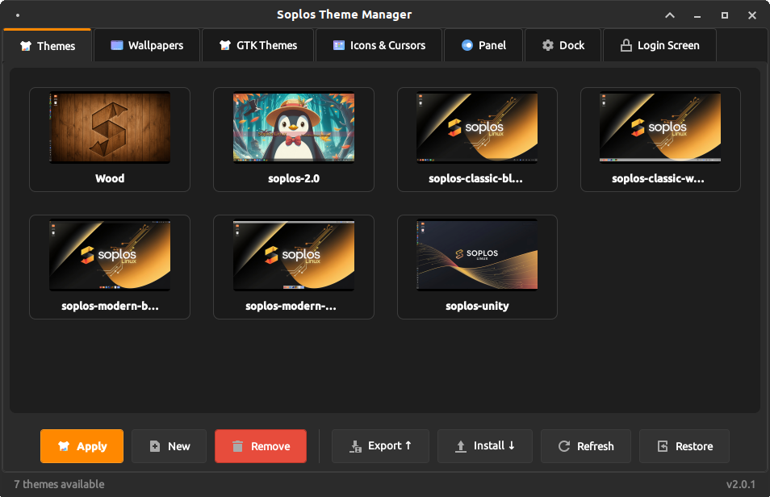
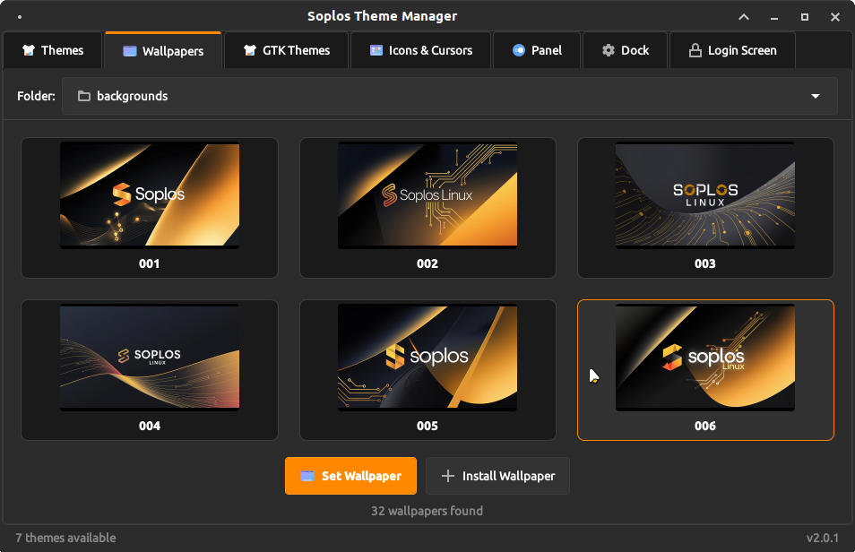
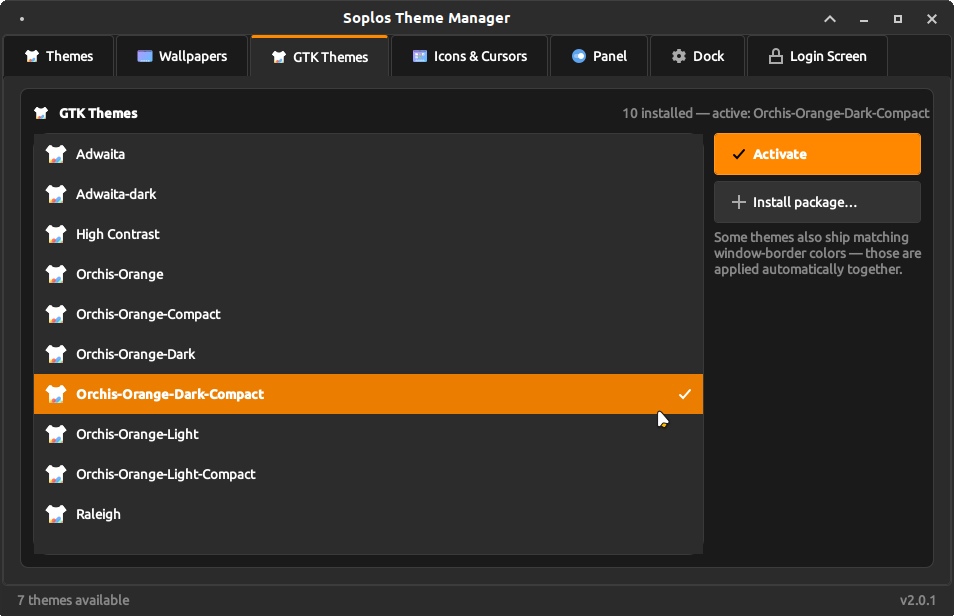
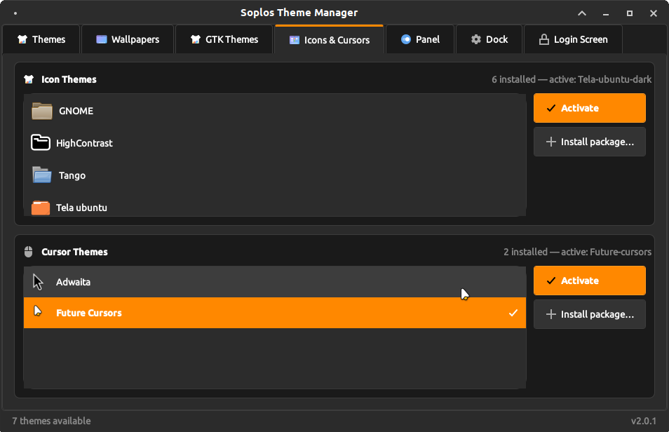
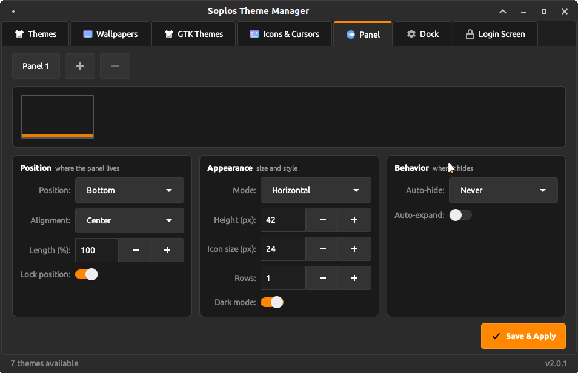

ES
ES FR
FR PT
PT DE
DE IT
IT RO
RO RU
RUOverview
Soplos Theme Manager v2.0 is the official theming tool for Soplos Linux Tyron (XFCE). It brings together in a single application everything needed to control the look and feel of the desktop: theme gallery, wallpaper browser, user manager, panel configuration and dock management.
Themes can be exported and imported as .sth files — a portable bundle that captures the complete desktop state and can be shared or restored on any Tyron installation.
Key Features
- Theme Gallery: Apply, create, export and import complete XFCE desktop themes. Each theme card shows an automatic screenshot preview captured with the desktop minimized.
- Wallpaper Browser: Browse and apply wallpapers from system directories. Thumbnails are decoded in a background thread for near-instant loading.
- User Manager: Set the user avatar with a crop dialog, edit personal data and manage group membership with checkboxes — changes applied via polkit. Replaces Mugshot.
- Panel: Full XFCE panel configuration — position, size, icon size, length, rows, auto-hide, dark mode and lock. Add, remove and reorder plugins from a single interface.
- Dock: Manage Docklike Taskbar pinned applications — add, remove and reorder from a browsable app list. Docklike configuration is fully integrated here.
- Theme Bundles (.sth): Export and import themes as .sth files (tar.gz + manifest). A single file captures the entire desktop configuration and can be shared across Tyron installations.
- Theme Scope: When applying a theme, choose between user-scope install (~/.themes, ~/.icons) or global install for all users (/usr/share/themes, /usr/share/icons) via pkexec privilege elevation.
- Base Themes: Bundled base themes are automatically seeded into the user's theme library on first launch. A Restore button reimports any missing base themes on demand without overwriting existing ones.
Screenshots




